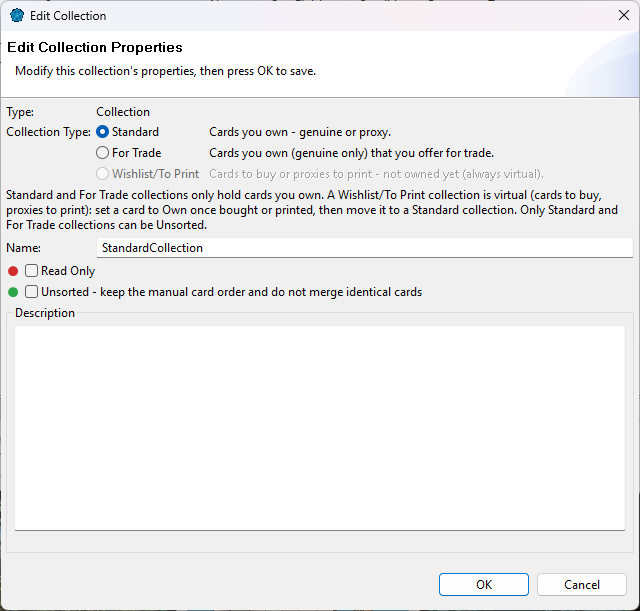
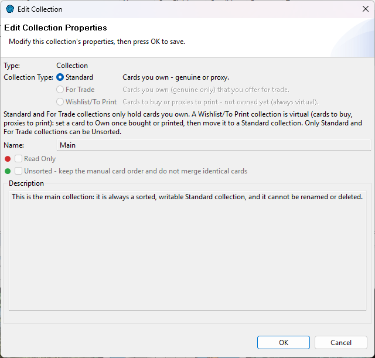

ManaDesk keeps your cards in two kinds of lists: collections and decks. Both appear in the Card Navigator, under Collections and Decks, and you can organize each in folders.
A collection is a set of cards you keep together: a binder, a box, your cards for trade, a wish list... Each collection has a type:
| Type | For | Cards in it are |
|---|---|---|
| Standard | Cards you own — genuine or proxy. | Own |
| For Trade | Cards you own and offer for trade. | Own |
| Wishlist/To Print | Cards to buy, or proxies to print — cards you don't own yet. | Virtual |
You choose the type when you create the collection. Later, in its properties, you can switch between Standard and For Trade. Changing between owned (Standard, For Trade) and virtual (Wishlist/To Print) is only possible while the collection is empty. A read-only collection can't change type until you unlock it. To turn wished cards into owned ones, move them to a Standard collection once bought (see Moving, copying and splitting).

Every workspace has a collection called Main. It is always there, always a Standard collection, always sorted and writable, and it can't be renamed or deleted. It is where cards go by default (for example with Insert or Add to Default Collection), and where the owned cards of a deleted deck go when you choose to disband it.

A deck is a list of the cards to play. A deck is virtual by default: it lists cards, while the copies you own stay in your collections. This is what lets the Buyer and the Proxier tell you which cards a deck still needs.
A deck can also have a sideboard and an extra list (tokens, emblems, markers). See Sideboard, extra list and accessories.
If you only build decks from cards you really own, uncheck Virtual when you create the deck. An owned deck holds cards you own, taken from your collections. Both kinds of deck can live side by side.
Each card in a list is either Own (you have it) or virtual (you don't). The O
column shows O or V.
A card's ownership follows its list: a card is Own in a Standard or For Trade collection, and virtual in a (virtual) deck or a Wishlist/To Print collection. Only an owned deck holds Own cards. You don't need to set it card by card:
Cards from older workspaces may not match their list. They keep their value, and you can only change them to match the list.
Create folders under Decks or Collections to keep things tidy: Commander, Binders, Old decks... Right-click a folder in the Card Navigator and choose New Folder....
Right-click a deck or collection and choose Edit Properties...:
| Property | Applies to | Meaning |
|---|---|---|
| Name | Both | Rename the list (its sideboard and extra list follow). |
| Collection Type | Collections | Standard, For Trade or Wishlist/To Print. Standard and For Trade switch freely; owned to virtual (or back) only while the collection is empty. Never while it is read only. |
| Read Only | Both | Lock the list against changes. |
| Unsorted | Standard and For Trade collections | Keep the manual order (see Unsorted collections). |
| Virtual | Decks | Whether the deck is virtual or an owned deck. It can only be changed while the deck (with its sideboard and extra list) is empty, and never while it is read only. |
| Boxed | Virtual decks | The deck is physically put together (see Boxed decks). Not available for an owned deck. |
| Digital | Both | Only while the digital cards are enabled: the list only holds cards that exist on MTGO or Arena. Shown for information: it is chosen when the list is created and can't be changed. A deck's sideboard and extra list follow. |
| Default Format | Decks | The format its legality is checked against. |
| Sideboard / Extra list | Decks | Create the deck's sideboard or extra list. |
| Description | Both | Your notes. |
The colored dots on the icons show these statuses: see Status markers.
See also: Creating collections and folders · Moving, copying and splitting · Creating a deck